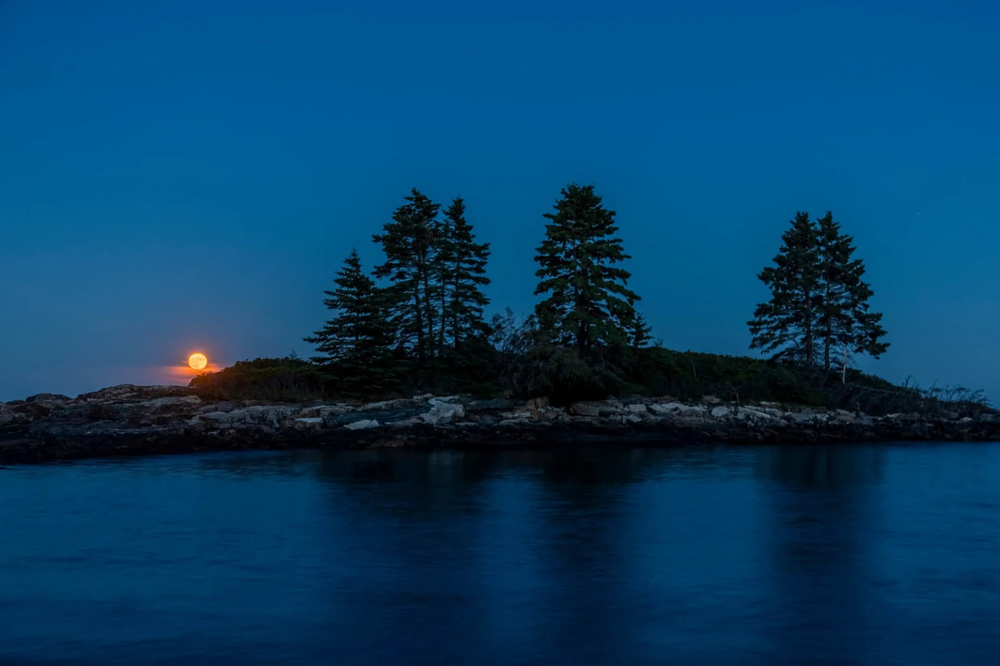
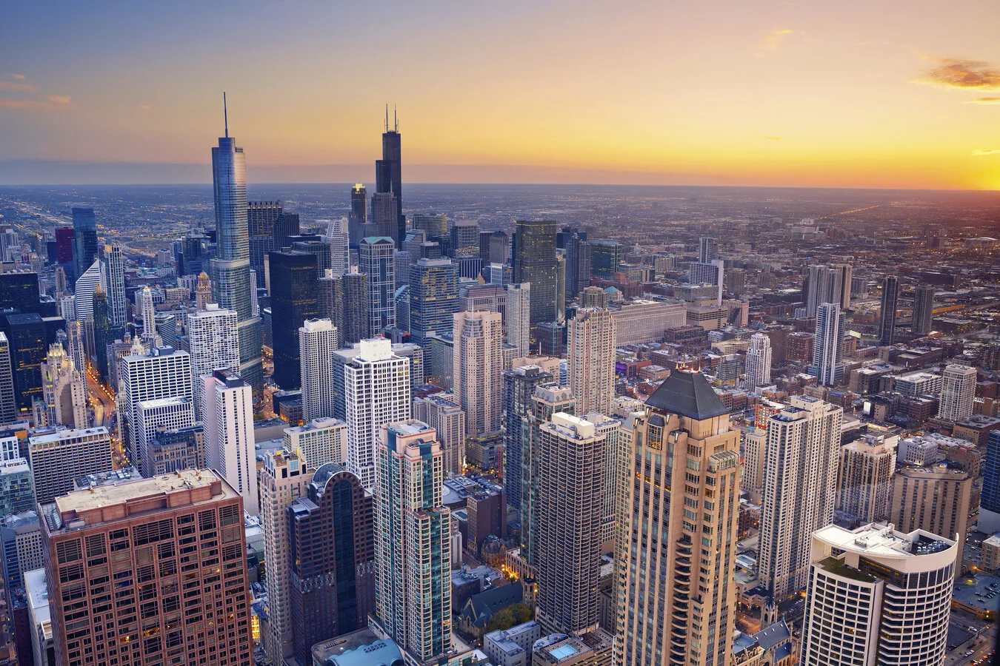
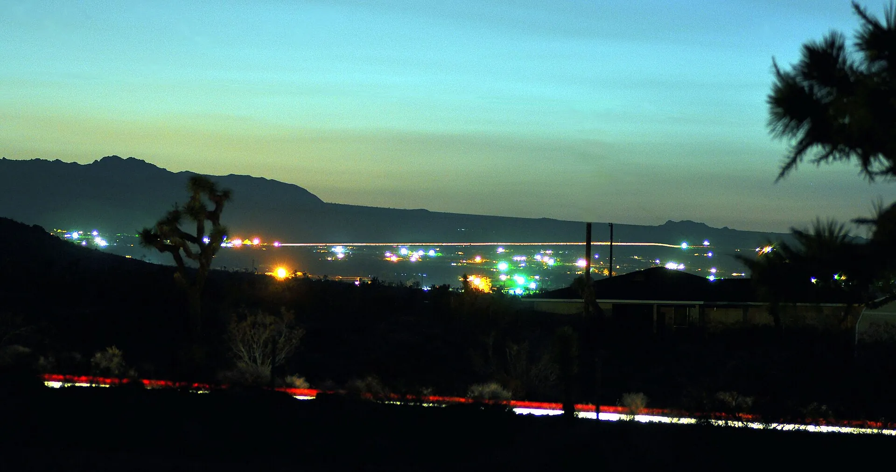
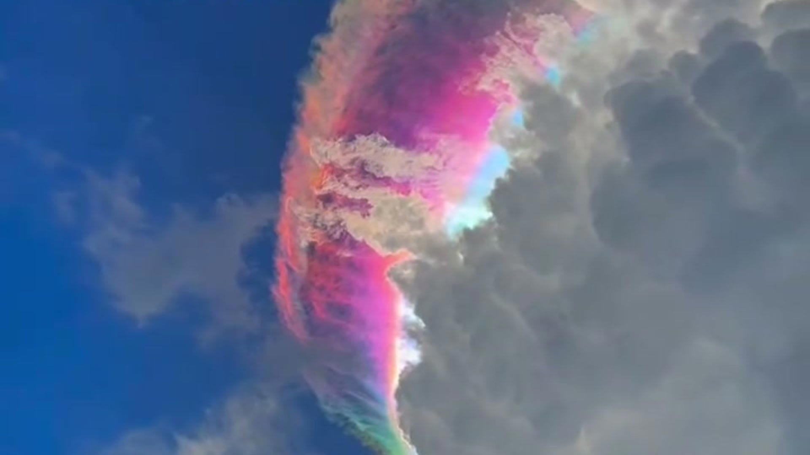
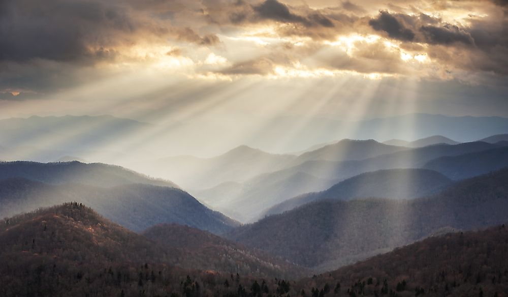
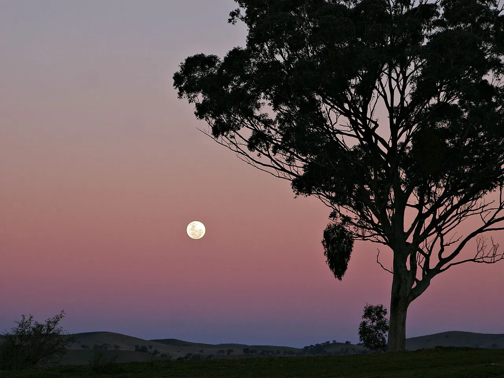
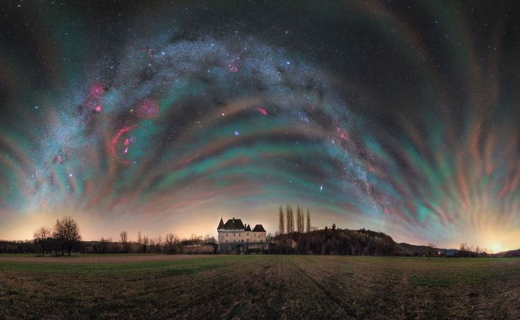
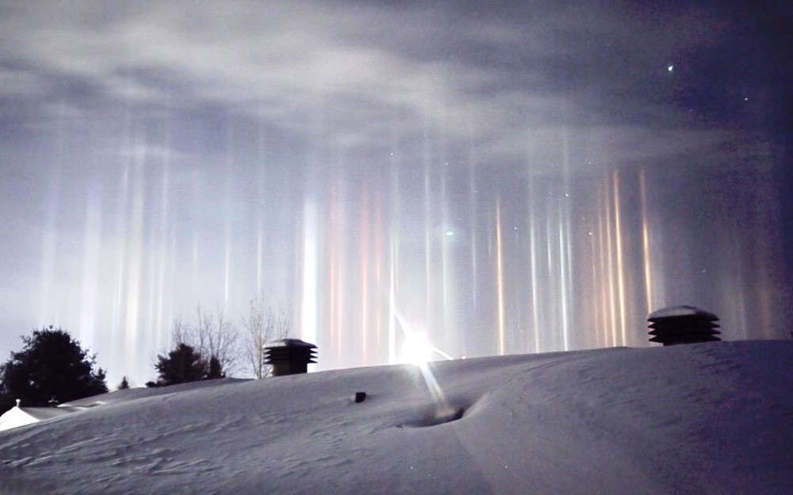
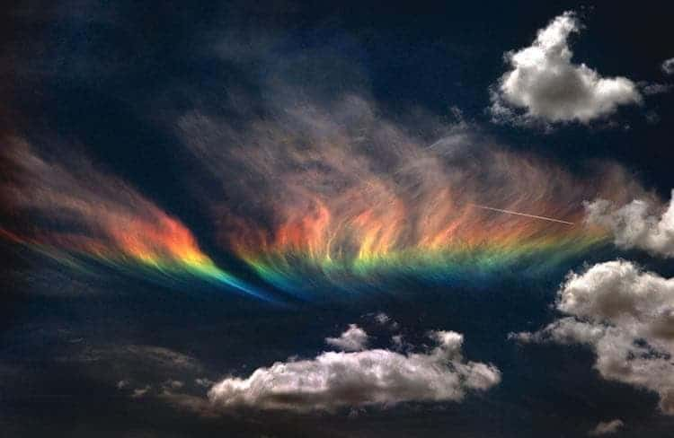
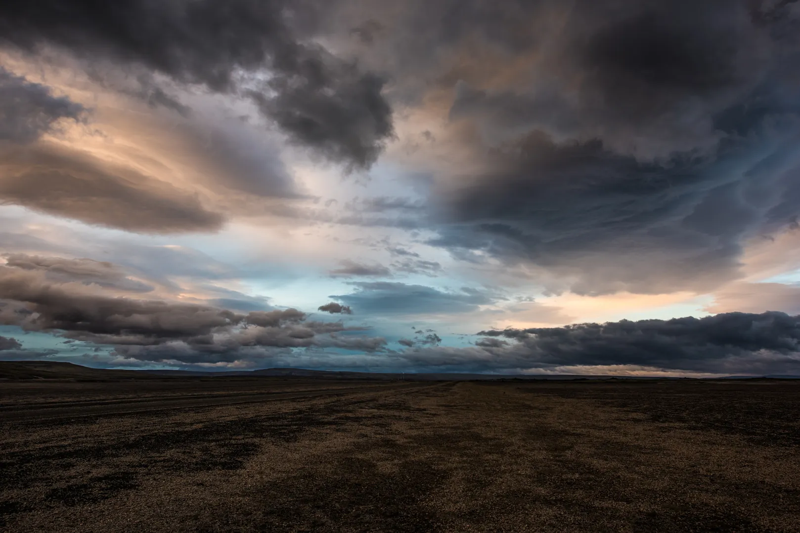

Dua puluh foto, dikelompokkan menurut proses fisik yang melahirkannya.
Klik foto untuk deskripsi lengkap, dan klik love menyimpannya ke dashboard Anda.
Golden Hour
Posisi Matahari · Jam emas ketika matahari rendah dan cahaya menjadi hangat serta lembut.
Golden hour adalah kurang lebih satu jam setelah matahari terbit dan sebelum matahari terbenam, ketika sang surya berada rendah di cakrawala. Cahaya harus menempuh jarak lebih panjang melalui atmosfer, sehingga cahaya biru tersaring dan yang tersisa adalah nuansa kuning–jingga yang hangat. Fotografer menyukainya karena bayangan menjadi panjang dan lembut, serta kulit dan lanskap terlihat bercahaya.

Blue Hour
Posisi Matahari · Jendela singkat bernuansa biru dalam sebelum fajar dan sesudah senja.
Blue hour terjadi ketika matahari cukup jauh di bawah cakrawala sehingga atmosfer hanya meneruskan cahaya biru pendek gelombangnya ke langit. Momennya singkat — biasanya 20–40 menit — dan menghasilkan langit biru pekat yang seimbang dengan lampu kota. Warna dinginnya membuat pemandangan kota, gunung, atau pantai terlihat tenang dan sinematik.

Civil Twilight
Posisi Matahari · Tahap senja paling terang, 0–6 derajat di bawah cakrawala.
Senja sipil dimulai saat matahari baru saja tenggelam hingga 6 derajat di bawah cakrawala. Pada tahap ini langit masih cukup terang untuk melakukan aktivitas luar ruangan tanpa lampu, dan cakrawala barat biasanya dihiasi gradasi jingga ke ungu. Istilah sipil merujuk pada penerangan yang memadai untuk urusan sipil — bahari zaman dahulu bahkan menamai fase ini “waktu navigasi biru”.

Nautical Twilight
Posisi Matahari · Tahap senja 6–12 derajat, waktu pelaut menghitung bintang di cakrawala.
Senja nautika berlangsung ketika matahari berada 6 hingga 12 derajat di bawah cakrawala. Namanya berasal dari pelaut yang memanfaatkan momen ini: cakrawala masih terlihat, tetapi bintang-bintang sudah cukup terang untuk dijadikan patokan navigasi. Langit memperlihatkan lapisan ungu, biru tua, dan sisa jingga yang menyempit di garis horizon.
Astronomical Twilight
Posisi Matahari · Tahap senja terakhir, 12–18 derajat, menuju langit benar-benar gelap.
Senja astronomis mencakup sudut 12 hingga 18 derajat di bawah cakrawala. Setelah matahari melewati batas 18 derajat, langit dianggap “gelap penuh” dan objek langit paling redup pun mulai terlihat. Bagi pengamat bintang, momen ini adalah penanda akhir kesibukan cakrawala dan awal dimulainya malam yang sesungguhnya.
Sun Dog (Parhelion)
Pembiasan Cahaya · Bercak cahaya seperti matahari kembar di sisi kiri dan kanan matahari.
Sun dog — “anjing matahari” — adalah bercak cahaya terang yang muncul di kiri dan kanan matahari, biasanya pada jarak sekitar 22 derajat. Fenomena ini disebabkan oleh pembiasan cahaya pada kristal es berbentuk pelat di awan cirrus rendah. Kadang terlihat seperti matahari kembar, lengkap dengan garis pelangi samar di tepinya.
Solar Halo
Pembiasan Cahaya · Lingkaran cahaya berdiameter ±22° yang mengelilingi matahari.
Halo 22 derajat adalah lingkaran cahaya yang mengelilingi matahari akibat pembiasan cahaya pada kristal es heksagonal di awan cirus. Bagian dalam lingkaran cenderung kemerahan dan bagian luarnya kebiruan karena panjang gelombang warna dibiaskan dengan sudut berbeda. Pemandangan ini sering dianggap pertanda datangnya hujan, sebab cirrus sering mendahului sistem cuaca basah.

Cloud Iridescence
Pembiasan Cahaya · Awan tipis berkilau warna-warni seperti minyak di air.
Awan irasi — atau irisasi — menampakkan warna-warna pelangi yang lembut pada awan tipis, biasanya altocumulus atau lenticularis, yang berada dekat matahari. Warna terbentuk karena difraksi cahaya pada tetesan air atau kristal es yang ukurannya seragam. Tampilannya sering menyerupai minyak di atas air, dan paling jelas saat matahari tertutup sebagian oleh awan.
Green Flash
Optik & Atmosfer · Kilatan hijau sesaat di tepi matahari saat terbit atau terbenam.
Green flash adalah kilatan berwarna hijau yang hanya berlangsung sedetik di tepi matahari ketika tepat di cakrawala. Atmosfer berperan seperti prisma raksasa: cahaya merah dibiaskan menjauh, sementara hijau sedikit terlambat dan tetap terlihat. Syaratnya tajam — udara bersih, cakrawala laut atau padang yang luas, dan matahari benar-benar mulus tenggelam.

Crepuscular Rays
Optik & Atmosfer · Berkas cahaya menyebar dari balik awan seperti kipas raksasa.
Sinar crepuskular adalah berkas cahaya matahari yang menyebar ke segala arah dari balik awan, seolah-olah matahari memancarkan jari-jari cahaya. Sebenarnya sinar-sinar itu sejajar; yang membuatnya tampak menyebar hanyalah ilusi perspektif — sama seperti rel kereta yang tampak menyatu di kejauhan. Bayangan awan yang menghalangi membentuk lapisan gelap di antara berkas terang.

Belt of Venus
Optik & Atmosfer · Pita merah muda di langit timur saat matahari terbenam.
Belt of Venus — “sabuk Venus” — adalah pita warna merah muda yang muncul di langit timur beberapa menit setelah matahari terbenam, tepat di atas bayangan bumi sendiri. Di bawahnya terlihat lapisan biru keabu-abuan yang merupakan atmosfer dalam bayangan. Kontras antara pita merah muda dan bayangan biru inilah yang membuatnya mudah dikenali.
Alpenglow
Optik & Atmosfer · Puncak gunung bersinar merah keemasan setelah matahari tenggelam.
Alpenglow adalah cahaya merah atau keemasan yang menyinari puncak pegunungan, biasanya setelah matahari terbenam atau sebelum terbit. Cahaya matahari dibiaskan oleh atmosfer dan memantul ke puncak yang masih terjangkau sinar lurus. Fenomena ini paling terkenal di pegunungan Alpen — tempat namanya berasal — namun dapat diamati di pegunungan mana pun dengan langit yang jernih.
Aurora
Cahaya Langit Ekstrem · Tirai cahaya hijau–ungu yang menari di langit kutub.
Aurora — dikenal juga sebagai lampu utara atau lampu selatan — terbentuk ketika partikel bermuatan dari Matahari menabrak gas di atmosfer bagian atas. Oksigen memancarkan hijau dan merah, nitrogen memberi ungu dan biru. Aurora paling sering terlihat di sekitar lingkaran kutub, namun pada badai geomagnet besar ia dapat turun hingga latitudang yang jauh lebih rendah.

Airglow
Cahaya Langit Ekstrem · Pancaran redup alami atmosfer yang membuat langit malam tak pernah gelap total.
Airglow adalah cahaya redup yang dipancarkan atmosfer itu sendiri akibat reaksi kimia — contohnya atom oksigen yang berekspresi setelah menyerap sinar ultraviolet siang hari. Berbeda dengan aurora, airglow terjadi di seluruh dunia dan sepanjang waktu, hanya saja sangat redup sehingga baru terekam jelas lewat eksposur panjang kamera. Dalam foto, ia tampak sebagai lapisan hijau samar di atas cakrawala.
Zodiacal Light
Cahaya Langit Ekstrem · Konus cahaya samar dari debu tata surya di sepanjang rasi bintang.
Zodiacal light adalah konus cahaya segitiga yang membentang dari cakrawala, mengikuti jalur ekliptika — jalur yang sama dengan yang dilalui planet. Cahaya ini dipantulkan oleh debu sisa pembentukan tata surya yang tersebar di ruang antarplanet. Paling terlihat di daerah tropis saat senja musim semi atau fajar musim gugur, jauh dari polusi cahaya.

Light Pillars
Efek Awan & Partikel · tiang cahaya vertikal dari lampu atau matahari memantul pada kristal es.
Pilar cahaya terbentuk ketika kristal es berbentuk pelat melayang di udara dingin dan memantulkan cahaya dari sumber di bawah maupun di atas. Hasilnya adalah tiang-tiang cahaya vertikal seolah menjulang dari tanah atau turun dari langit. Sumbernya bisa lampu kota, bulan, bahkan matahari — pilir matahari disebut “sun pillar”.

Fire Rainbow
Efek Awan & Partikel · Awan cirrus yang diwarnai pelangi, tampak seperti api di langit.
Pelangi api — nama ilmiahnya circumhorizontal arc — adalah pita warna pelangi yang membentang horizontal pada awan cirrus. Namanya “api” hanya karena tampilannya yang merah menyala bagaikan lidah api, bukan karena panas. Syaratnya ketat: matahari harus tinggi di langit (lebih dari 58°) dan awan cirrus berisi kristal es pelat harus berada tepat di atas pengamat.
Foggy Morning
Cuaca & Musiman · Kabut rendah yang melembutkan cahaya pagi menjadi biru keperakan.
Kabut terbentuk ketika udara lembap mendingin hingga titik embun, mengubah uap air menjadi tetesan mikro yang meneruskan cahaya ke segala arah. Cahaya matahari yang menembus kabut tersebar merata, menghasilkan pencahayaan lembut tanpa bayangan keras — hampir seperti softbox raksasa buatan alam. Kabut paling sering muncul dini hari di lembah, danau, atau pesisir.

Overcast Light
Cuaca & Musiman · Langit tertutup yang mengubah seluruh lanskap menjadi warna kelabu lembut.
Pada langit mendung, awan tebal menyaring cahaya matahari dan menyebarkannya merata ke seluruh langit. Hasilnya adalah pencahayaan tanpa arah: warna terlihat jujur, bayangan hilang, dan kontras menurun. Bagi fotografer lanskap, mendung bukan cuaca buruk — ia mengungkap warna tanaman, batu, dan air yang biasanya tenggelam oleh silau matahari.
Bioluminescent Night
Lanskap Eksotis · Laut yang bercahaya biru pekat akibat organisme mikroskopis.
Bioluminesensi laut terjadi ketika organisme mikroskopis bernama dinoflagellata memancarkan cahaya biru ketika terganggu — misalnya oleh ombak, perahu, atau ikan yang berenang. Reaksi kimia di dalam tubuh mereka mengubah energi menjadi cahaya hampir tanpa panas. Fenomena ini bisa ditemui di banyak pesisir dunia, dan dalam jumlah besar membuat pantai tampak seperti lautan bintang.

.jpg)